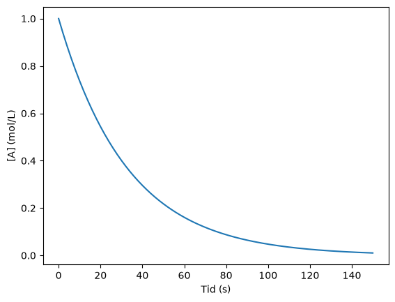
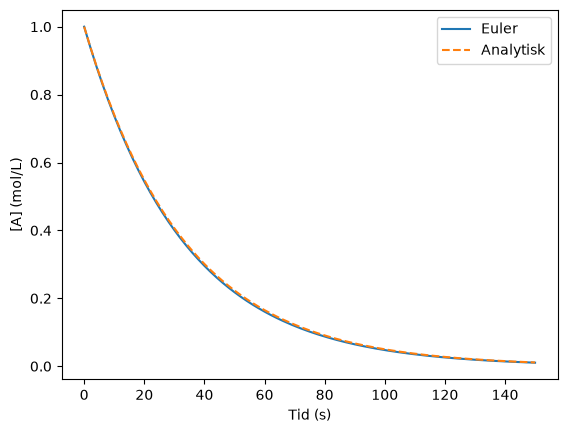
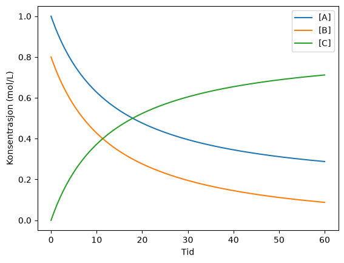
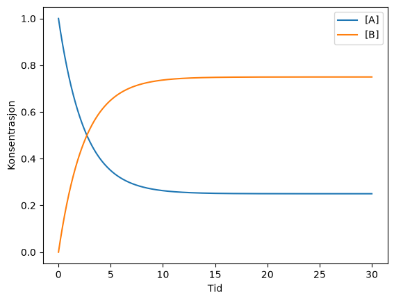
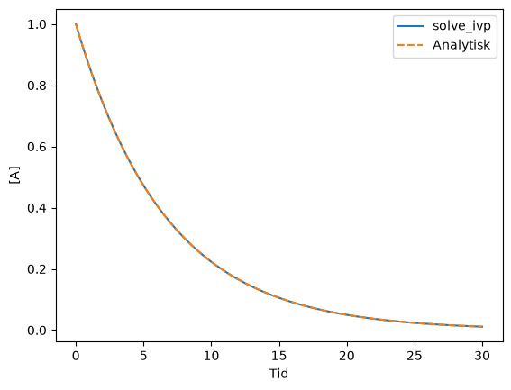
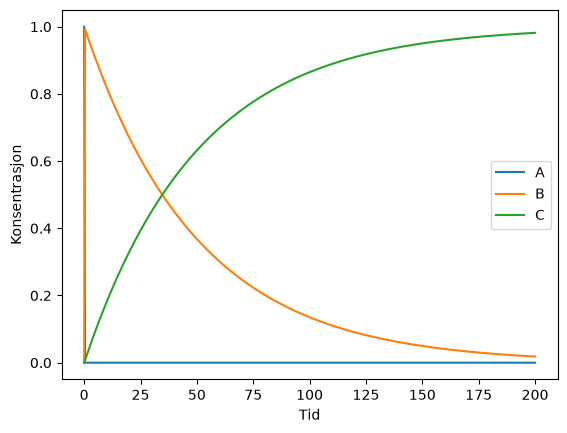

Differensiallikninger og fartslover#
Læringsutbytte
Etter å ha arbeidet med dette temaet, skal du kunne:
forklare hvordan en differensiallikning beskriver endringen i et dynamisk system
utlede og implementere Forward Euler
modellere enkle og koblede kjemiske fartslover
undersøke hvordan tidssteg påvirker numerisk feil og stabilitet
bruke
solve_ivptil å løse initialverdiproblemerkontrollere en simulering med analytiske løsninger, stoffbalanse og kjemisk rimelighet
Motivasjon#
Eksperimenter står helt sentralt i kjemi, men simuleringer har blitt et viktig supplement. En simulering kan hjelpe oss å undersøke hvordan et kjemisk system utvikler seg når vi endrer en parameter, teste en modell mot eksperimentelle data eller studere systemer som er vanskelige å følge direkte.
Ofte kjenner vi ikke et ferdig uttrykk for utviklingen, men vi kjenner endringen. Et klassisk eksempel er en fartslov. For en førsteordens reaksjon
har vi
Likningen forteller hvordan konsentrasjonen endrer seg akkurat nå. Oppgaven vår er å bruke denne informasjonen til å finne hele utviklingen \([A](t)\).
Hva er en differensiallikning?#
En differensiallikning er en likning som inneholder en ukjent funksjon og én eller flere av de deriverte til funksjonen. Du kan møte mange skrivemåter:
eller mer generelt
Felles for dem er at venstresiden beskriver endringen, mens høyresiden forteller hva endringen avhenger av.
Når vi løser en vanlig algebraisk likning, leter vi etter et tall. Når vi løser en differensiallikning, leter vi etter en funksjon eller, numerisk, en rekke funksjonsverdier.
Hvorfor trenger vi en startverdi?#
Ta den svært enkle differensiallikningen
Hvis vi integrerer, får vi
Det finnes altså uendelig mange løsninger – én for hver verdi av konstanten \(C\). Hvis vi i tillegg vet at
blir \(C=2\), og vi får én bestemt løsning. En slik opplysning kalles en initialbetingelse.
I kjemi kan initialbetingelsen for eksempel være startkonsentrasjonen \([A](0)\).
Fra den deriverte til Eulers metode#
Vi kjenner framoverdifferansen fra numerisk derivasjon:
Nå bruker vi den på en litt annen måte. Vi kjenner \(y(t)\) og uttrykket for den deriverte \(dy/dt\), og ønsker å finne neste verdi, \(y(t+\Delta t)\).
Vi ganger først med \(\Delta t\):
Så flytter vi \(y(t)\) over på den andre siden:
Skriver vi differensiallikningen som \(dy/dt=f(t,y)\) og bruker indekser, får vi
Dette er Forward Euler. Legg merke til koblingen til forrige kapittel: Vi har gjort en kontinuerlig differensiallikning om til en differenslikning som datamaskinen kan gjenta steg for steg.
Førsteordens reaksjon med Euler#
Vi bruker
Før vi lager en generell Euler-funksjon, skriver vi ut algoritmen direkte. Da blir sammenhengen mellom fartsloven og koden tydeligst.
import numpy as np
import matplotlib.pyplot as plt
k = 0.030 # s^-1
A = 1.00 # mol/L
t = 0.0 # s
dt = 1.0 # s
t_slutt = 150.0
tid = [t]
konsentrasjon = [A]
while t < t_slutt:
dA_dt = -k*A
A = A + dA_dt*dt
t = t + dt
tid.append(t)
konsentrasjon.append(A)
plt.plot(tid, konsentrasjon)
plt.xlabel("Tid (s)")
plt.ylabel("[A] (mol/L)")
plt.show()

Linjen
A = A + dA_dt*dt
er Eulers metode. Alt det andre i programmet setter startverdier, holder styr på tiden og lagrer resultatene slik at vi kan plotte dem.
Når vi har forstått denne løkken, kan vi pakke Euler-algoritmen inn i en funksjon. Da skiller vi selve løsningsmetoden fra den konkrete kjemiske modellen.
def euler(f, y0, t0, t_slutt, dt):
t = t0
y = y0
tid = [t]
verdier = [y]
while t < t_slutt:
y = y + f(t, y)*dt
t = t + dt
tid.append(t)
verdier.append(y)
return np.array(tid), np.array(verdier)
def forste_orden(t, A):
return -k*A
A0 = 1.00
tid, A_euler = euler(forste_orden, A0, 0, 150, 1.0)
Denne førsteordens reaksjonen har også en analytisk løsning,
Det gjør den spesielt nyttig når vi lærer en numerisk metode: Vi kan kontrollere resultatet mot en kjent løsning.
A_analytisk = A0*np.exp(-k*tid)
plt.plot(tid, A_euler, label="Euler")
plt.plot(tid, A_analytisk, "--", label="Analytisk")
plt.xlabel("Tid (s)")
plt.ylabel("[A] (mol/L)")
plt.legend()
plt.show()
print("Største absolutte feil:", np.max(np.abs(A_euler - A_analytisk)))

Største absolutte feil: 0.005588366753556284
Hvor stort tidssteg bør vi bruke?#
Euler antar at stigningen vi har nå, er en god tilnærming gjennom hele neste tidssteg. Hvis tidssteget er stort og systemet endrer seg raskt, blir denne antakelsen dårlig.
Vi undersøker derfor ikke bare én verdi av \(\Delta t\). Et viktig numerisk kontrollspørsmål er:
Endrer løsningen seg vesentlig hvis vi reduserer tidssteget?
for dt_test in [10.0, 5.0, 1.0, 0.2]:
t_test, A_test = euler(forste_orden, A0, 0, 150, dt_test)
A_eksakt = A0*np.exp(-k*t_test[-1])
feil = abs(A_test[-1] - A_eksakt)
print(f"dt = {dt_test:4.1f} s feil ved slutt = {feil:.3e}")
dt = 10.0 s feil ved slutt = 6.361e-03
dt = 5.0 s feil ved slutt = 3.478e-03
dt = 1.0 s feil ved slutt = 7.394e-04
dt = 0.2 s feil ved slutt = 1.496e-04
Prøv selv#
Endre ratekonstanten og tidssteget, og undersøk når Euler gir en god tilnærming.
Koblede fartslover#
Mange kjemiske systemer inneholder flere konsentrasjoner som utvikler seg samtidig. For den irreversible reaksjonen
med fart
får vi
De tre likningene er koblet fordi den samme reaksjonsfarten avhenger av både \([A]\) og \([B]\).
k = 0.08
dt = 0.1
t = np.arange(0, 60 + dt, dt)
A = np.zeros(len(t))
B = np.zeros(len(t))
C_prod = np.zeros(len(t))
A[0] = 1.00
B[0] = 0.80
C_prod[0] = 0.00
for n in range(len(t) - 1):
rate = k*A[n]*B[n]
A[n + 1] = A[n] - rate*dt
B[n + 1] = B[n] - rate*dt
C_prod[n + 1] = C_prod[n] + rate*dt
plt.plot(t, A, label="[A]")
plt.plot(t, B, label="[B]")
plt.plot(t, C_prod, label="[C]")
plt.xlabel("Tid")
plt.ylabel("Konsentrasjon (mol/L)")
plt.legend()
plt.show()

Kontroller kjemien: stoffbalanse#
Et numerisk program er ikke validert bare fordi grafen ser pen ut. For reaksjonen over skal
og
så lenge modellen bare inneholder denne ene reaksjonen.
balanse_A = A + C_prod
balanse_B = B + C_prod
print("Største avvik i A-balansen:", np.max(np.abs(balanse_A - A[0])))
print("Største avvik i B-balansen:", np.max(np.abs(balanse_B - B[0])))
Største avvik i A-balansen: 4.440892098500626e-16
Største avvik i B-balansen: 5.551115123125783e-16
Reversibel reaksjon og dynamisk likevekt#
For
kan vi skrive
Når systemet når dynamisk likevekt, blir nettoendringen null selv om framover- og bakoverreaksjonene fortsatt inngår i modellen.
k_f = 0.30
k_b = 0.10
dt = 0.05
t = np.arange(0, 30 + dt, dt)
A = np.zeros(len(t))
B = np.zeros(len(t))
A[0] = 1.0
for n in range(len(t) - 1):
netto = k_f*A[n] - k_b*B[n]
A[n + 1] = A[n] - netto*dt
B[n + 1] = B[n] + netto*dt
plt.plot(t, A, label="[A]")
plt.plot(t, B, label="[B]")
plt.xlabel("Tid")
plt.ylabel("Konsentrasjon")
plt.legend()
plt.show()
print("A + B ved slutten:", A[-1] + B[-1])
print("B/A ved slutten:", B[-1]/A[-1])

A + B ved slutten: 1.0000000000000018
B/A ved slutten: 2.9999347140732855
Metoder av høyere orden: RK4#
Forward Euler er en metode av første orden. Orden beskriver hvordan den numeriske feilen avtar når steglengden reduseres; den betyr ikke bare hvor mange ganger funksjonen evalueres.
Den klassiske Runge–Kutta-metoden RK4 bruker fire mellomliggende stigninger i hvert steg og har global feil som avtar omtrent som \(\Delta t^4\) når forutsetningene er oppfylt. Metoden er derfor langt mer presis enn Euler for mange glatte problemer.
def rk4_steg(f, t, y, dt):
k1 = f(t, y)
k2 = f(t + dt/2, y + dt*k1/2)
k3 = f(t + dt/2, y + dt*k2/2)
k4 = f(t + dt, y + dt*k3)
return y + dt*(k1 + 2*k2 + 2*k3 + k4)/6
def dy_dt(t, y):
return -0.15*y
y = 1.0
t0 = 0.0
dt = 1.0
for n in range(10):
y = rk4_steg(dy_dt, t0 + n*dt, y, dt)
print("RK4 etter 10 tidsenheter:", y)
print("Analytisk:", np.exp(-0.15*10))
RK4 etter 10 tidsenheter: 0.2231317605083842
Analytisk: 0.22313016014842982
solve_ivp: ferdige ODE-løsere#
I praktisk arbeid bruker vi vanligvis testede ODE-løsere. scipy.integrate.solve_ivp løser initialverdiproblemer og kan selv tilpasse tidssteg for å holde feilen under valgte toleranser.
Standardmetoden er RK45, en adaptiv Runge–Kutta-metode som bruker et innebygd par av femte og fjerde orden. Femteordensformelen brukes til selve steget, mens forskjellen mellom de to ordenene brukes til å anslå feilen og styre steglengden.
from scipy.integrate import solve_ivp
def forste_orden(t, y):
return -0.15*y
t_eval = np.linspace(0, 30, 200)
losning = solve_ivp(forste_orden, [0, 30], [1.0], t_eval=t_eval, rtol=1e-8, atol=1e-10)
plt.plot(losning.t, losning.y[0], label="solve_ivp")
plt.plot(t_eval, np.exp(-0.15*t_eval), "--", label="Analytisk")
plt.xlabel("Tid")
plt.ylabel("[A]")
plt.legend()
plt.show()

Stive differensiallikninger#
Noen systemer inneholder prosesser på svært ulike tidsskalaer. Da kan eksplisitte metoder som Euler eller RK45 måtte bruke svært små tidssteg for å være stabile, selv om den langsomme delen av løsningen utvikler seg rolig. Slike problemer kalles ofte stive.
Kjemisk kinetikk kan bli stiv når noen reaksjoner er svært raske og andre svært langsomme. solve_ivp har implisitte metoder som BDF og Radau som er laget for slike problemer.
Vi skal ikke implementere disse metodene selv, men det er nyttig å kjenne igjen hvorfor en annen løser kan være nødvendig.
def konsekutive_reaksjoner(t, y):
A, B, C = y
k1 = 100.0
k2 = 0.02
dA = -k1*A
dB = k1*A - k2*B
dC = k2*B
return [dA, dB, dC]
t_eval = np.linspace(0, 200, 500)
stiv = solve_ivp(konsekutive_reaksjoner, [0, 200], [1.0, 0.0, 0.0], t_eval=t_eval, method="BDF")
plt.plot(stiv.t, stiv.y[0], label="A")
plt.plot(stiv.t, stiv.y[1], label="B")
plt.plot(stiv.t, stiv.y[2], label="C")
plt.xlabel("Tid")
plt.ylabel("Konsentrasjon")
plt.legend()
plt.show()

En god simuleringsvane
Når du løser en kjemisk differensiallikning numerisk, bør du spørre:
Har jeg formulert riktige fartslover og støkiometriske fortegn?
Er enhetene konsistente?
Endrer løsningen seg mye hvis jeg strammer inn toleransen eller reduserer tidssteget?
Bevares stoffmengde eller andre størrelser som modellen sier skal bevares?
Stemmer grensetilfellene med kjemisk intuisjon?
Kort oppsummering#
En differensiallikning beskriver sammenhengen mellom tilstanden og endringen i et system.
\(f'(t)\) og \(df/dt\) er to notasjoner for den deriverte.
Euler lager en diskret differenslikning fra en kontinuerlig endringsrate.
Koblede fartslover må oppdateres konsistent med støkiometrien.
RK4 er en fjerdeordens metode; «orden» beskriver feilskalering, ikke bare antall funksjonsevalueringer.
solve_ivper det naturlige verktøyet for praktiske ODE-problemer.Stive systemer kan kreve metoder som BDF eller Radau.
Numeriske resultater bør kontrolleres med kjemiske bevaringslover og konvergens.
Oppgaver#
Oppgave 1 – Euler og analytisk løsning
Løs \(d[A]/dt=-0.20[A]\) med \([A](0)=1.50\) mol/L med Euler. Sammenlikn med den analytiske løsningen etter 5, 10 og 20 tidsenheter.
Oppgave 2 – tidssteg
Gjenta oppgave 1 med \(\Delta t=2.0\), 1.0, 0.5, 0.1 og 0.01. Lag et plott av feilen ved \(t=20\) som funksjon av \(\Delta t\).
Oppgave 3 – koblet reaksjon
Simuler \(\mathrm{A+B\rightarrow C}\) med \(k=0.05\), \([A]_0=1.00\) M og \([B]_0=0.60\) M. Kontroller at \([A]+[C]\) og \([B]+[C]\) er konstante.
Oppgave 4 – reversibel reaksjon
For \(\mathrm{A\rightleftharpoons B}\) bruker du \(k_f=0.40\) og \(k_b=0.10\). Start med bare A. Simuler til systemet er nær likevekt, og sammenlikn det numeriske forholdet \([B]/[A]\) med \(k_f/k_b\).
Oppgave 5 – Euler mot RK4
Bruk samme relativt store tidssteg til å løse en førsteordens reaksjon med Euler og RK4. Sammenlikn begge med den analytiske løsningen.
```{admonition} Oppgave 6 – solve_ivp
:class: tip
Løs den førsteordens reaksjonen med solve_ivp. Undersøk feltene success, message og antall funksjonsevalueringer nfev. Hva forteller de deg?
```{admonition} Oppgave 7 – konsekutive reaksjoner
:class: tip
Modeller $\mathrm{A\rightarrow B\rightarrow C}$ med to ulike ratekonstanter. Finn tidspunktet der $[B]$ er størst. Forklar kjemisk hvorfor mellomproduktet først øker og deretter avtar.
Oppgave 8 – stivt system
Bruk modellen med \(k_1=100\) og \(k_2=0.02\). Løs den med RK45 og BDF med samme toleranser. Sammenlikn nfev og kommenter forskjellen.